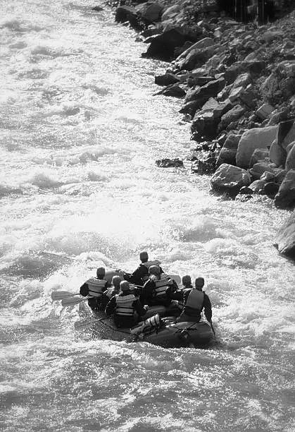

This company has been in operation since 1965 and was founded by William P. Sherbet. After Sherbet's
original plan to start an icecream business failed, he decided his true passion wasn't icecream at
all. It was being outside and being active.
Sherbet always had a fondness for the outdoors and adventure. He specifically enjoyed river rafting
and
found it exhilarating. He wanted to share his passion with everyone and help them
have
new and exciting experiences. Thus, Splash White Water Rafting was born.

Since 1965, Splash White Water Rafting has grown in size. Growth started off slowly, as the company
had to rely mostly on word of mouth, but as social media became big, more people heard about the
company. People all across the United States, from
all
walks of life travel here to experience the untameable wildness of the river. Find out more about
Splash White Water Rafting through the social media links ate the bottom of the page! If you are
interested, come take a tour!